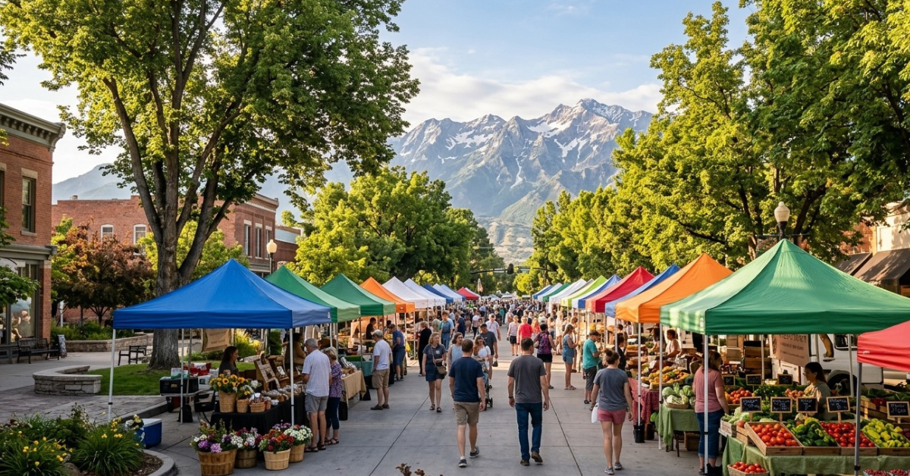
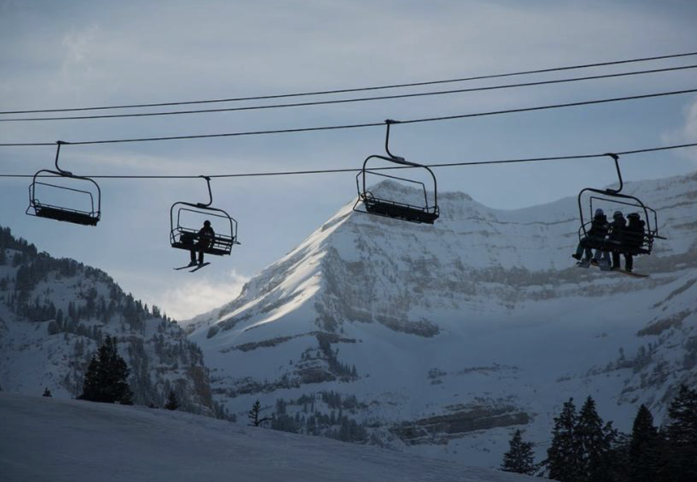
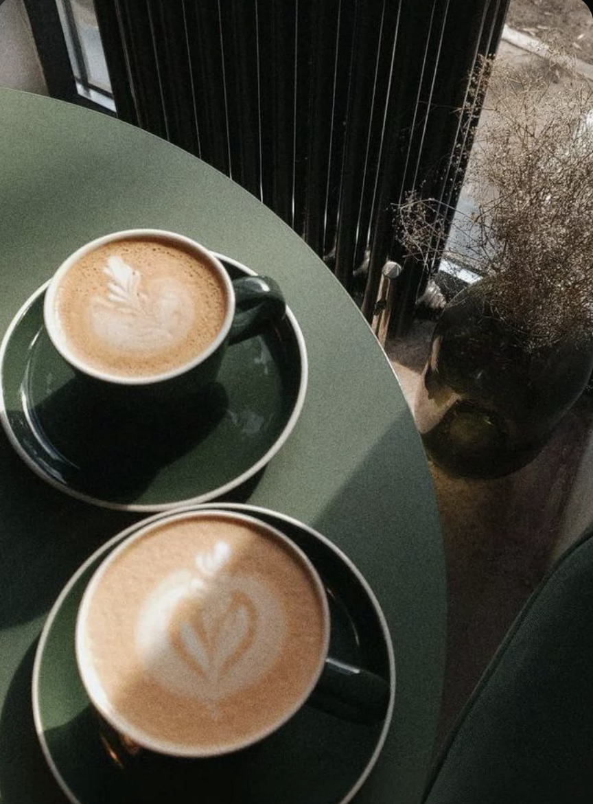
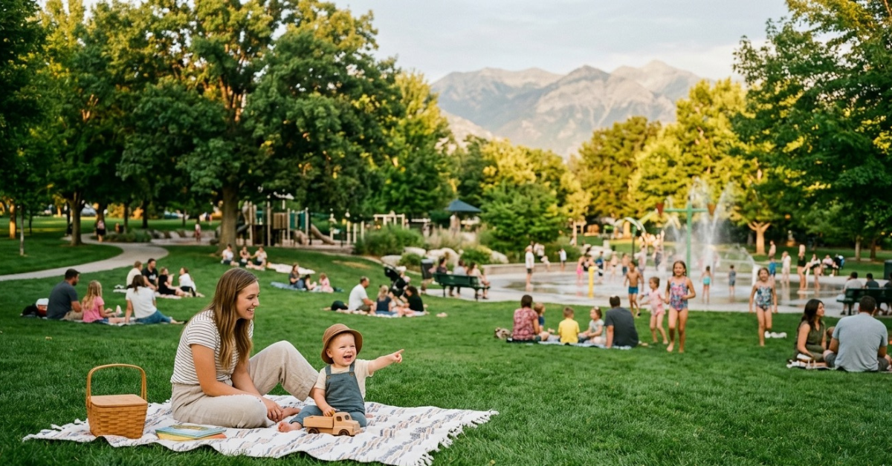
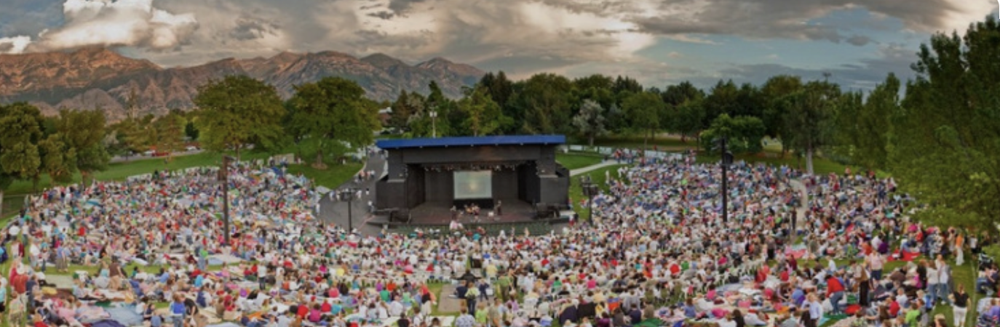

This is the part they never put in the listing.
I have lived in 4 states and moved more times than I care to count. Utah County is the first place that made me feel like I actually landed somewhere. Here is what I mean by that.
I have lived in 4 states and moved more times than I care to count. Utah County is the first place that made me feel like I actually landed somewhere. Here is what I mean by that.





The best way I know to answer that is to show you around. I grew up here, left, came back by choice, and I have never regretted it. Let's talk about what you are looking for.
Talk to Kelsie.